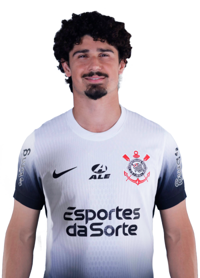
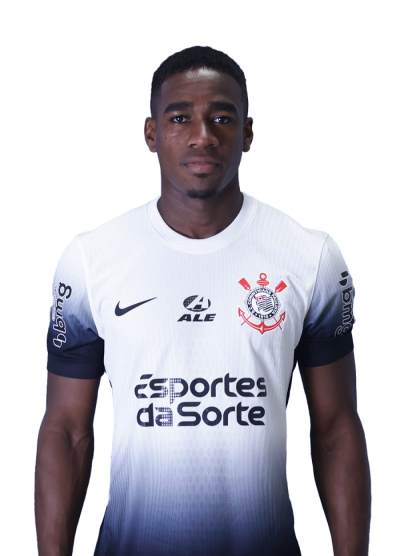
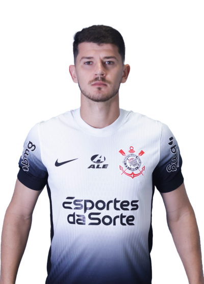
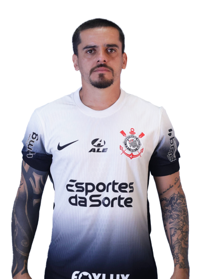
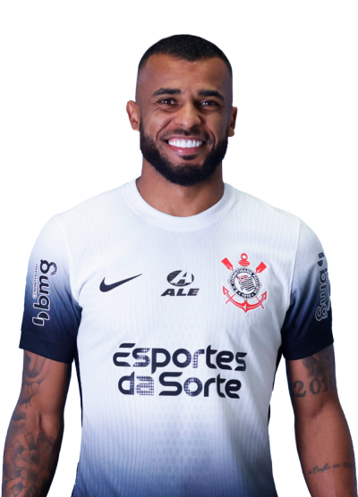
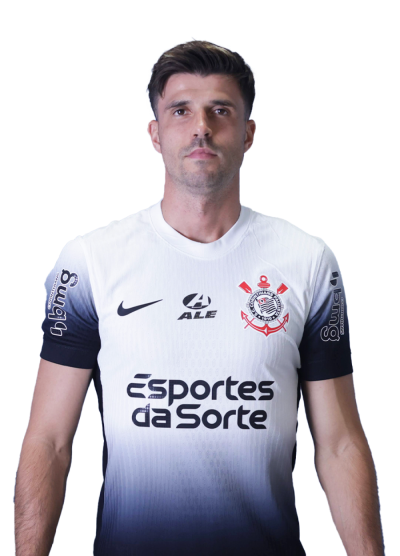
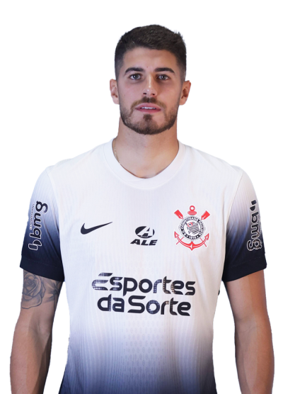
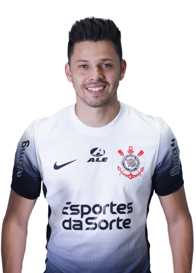

CORINTHIANIZE
HISTÓRIA
ELENCO
QUIZ
STATS
SAIR
ELENCO
Vote nos seus jogadores favoritos (Você pode votar mais de uma vez)
Goleiros
F Longo
Hugo Souza
Donelli
Zagueiros

Ramalho
Cacá

Félix
GH
Caetano
Laterais
Palacios

Hugo
Matheuzinho

Fagner
Bidu
Meias

Santana
Carrillo
Bidon
Charles
Martínez
Ryan
Maycon
Raniele
Coronado
Araújo
Garro
Ruan
Atacantes
Giovane

Héctor
Memphis
P Henrique

P Raul

Romero
Talles
Yuri